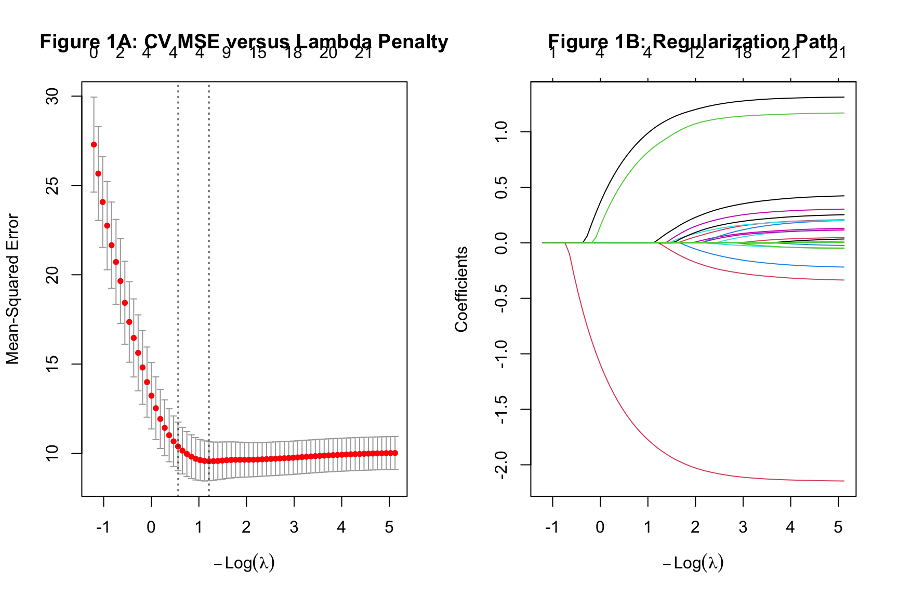
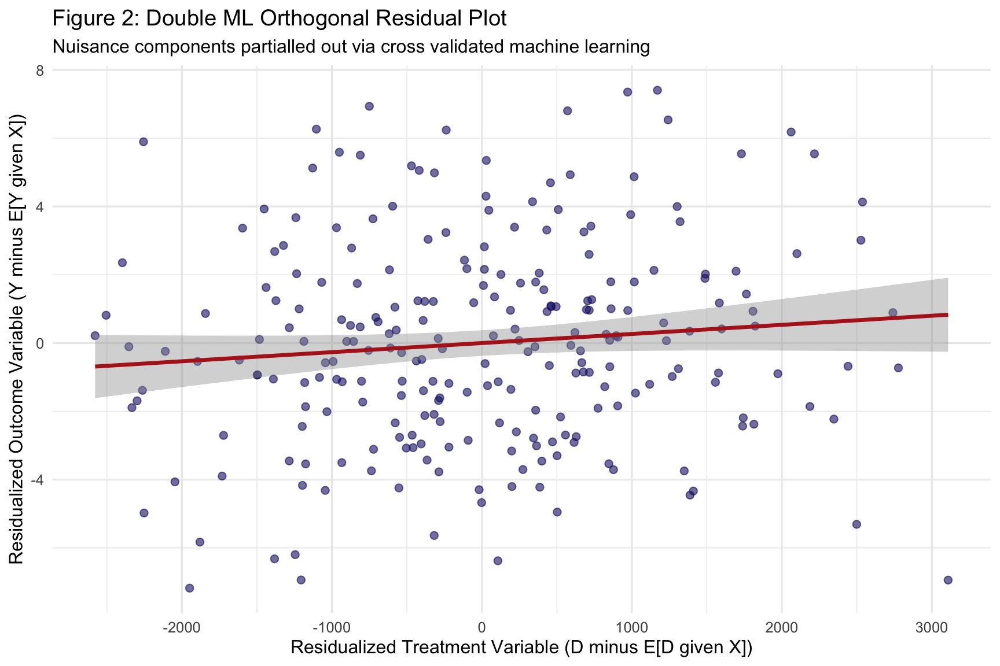
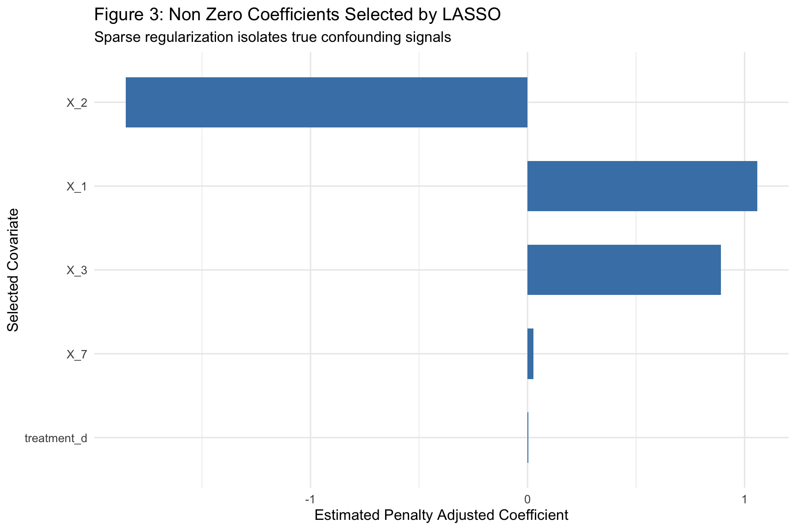

Machine Learning and High Dimensional Econometrics
Regularized Regression and Double Debiased Machine Learning
Author
Neena Abimbola Albarus
1. Theoretical Foundations and Methodological Overview
Modern econometrics increasingly faces problems where the number of potential controls is large relative to the sample size, and where the relationship between those controls and the outcome is unknown and possibly non linear. Traditional OLS breaks down in this setting because it cannot handle more regressors than observations, and because it overfits when many controls are included. Regularized regression methods such as Lasso and Ridge solve the first problem by shrinking coefficients toward zero and performing automatic variable selection. Double debiased machine learning solves the second problem by combining flexible machine learning models with orthogonalization so that the causal parameter of interest is estimated at the parametric rate even when the nuisance functions are estimated with regularization bias.
The core idea behind DML is the Frisch Waugh Lovell partialling out principle, combined with cross fitting. In a partially linear model, the outcome Y depends on a treatment D and a set of controls X through two unknown nuisance functions. The DML estimator residuals both Y and D on X using separate machine learning models, then regresses the residualized Y on the residualized D. Cross fitting ensures that the residualization is honest, meaning the model that residualizes observation i was not trained on observation i itself. This gives the estimator excellent statistical properties even in high dimensional settings.
In this workbook, we construct a synthetic high dimensional dataset with twenty controls and a continuous treatment, estimate Lasso coefficients to identify which controls carry real signal, and apply the DML partially linear model to recover a causal effect in the presence of unknown confounding.
⚠️ Common Pitfalls
Using the same data to select variables and estimate the effect. If you select controls with Lasso on the full sample and then run OLS on the selected controls, the standard errors are invalid. DML solves this through cross fitting.
Forgetting to tune the regularization parameter. Lasso with an arbitrary penalty will either over or under select. Always tune the penalty via cross validation.
Treating machine learning flexibility as a free lunch. Flexible nuisance models reduce bias only when the estimator is orthogonalized. Plugging an ML prediction into a naive regression can produce substantial bias.
2. Data Pipeline and High Dimensional Construct
Before any modeling, we locate the OWID data, filter to a single cross section, and construct a synthetic high dimensional dataset with a continuous treatment and twenty covariates. The synthetic construction gives us a known ground truth so we can verify that the estimators recover the correct causal parameter.
# Dynamic path resolution across common working directoriespossible_paths <-c("../data/life_expectancy_data.csv","data/life_expectancy_data.csv","../../data/life_expectancy_data.csv","/Users/yawdgyal/Desktop/R for github/data/life_expectancy_data.csv","/Users/yawdgyal/Desktop/R for github/workbooks/data/life_expectancy_data.csv")data_path <- possible_paths[file.exists(possible_paths)][1]if (is.na(data_path) ||length(data_path) ==0) {stop("Could not locate 'life_expectancy_data.csv'. ","Searched the following paths:\n",paste(possible_paths, collapse ="\n") )}message("Loading data from: ", data_path)owid_raw <-read_csv(data_path, show_col_types =FALSE)# Robust renaming helperrename_owid <-function(df) { nm <-names(df) new_names <- nm new_names[nm %in%c("Entity", "entity", "country")] <-"country" new_names[nm %in%c("Code", "code", "iso_code")] <-"code" new_names[nm %in%c("Year", "year")] <-"year" life_candidates <-c("Life expectancy", "life_expectancy","Life Expectancy", "life expectancy" ) new_names[nm %in% life_candidates] <-"life_exp"names(df) <- new_names df}owid_df <-rename_owid(owid_raw)required_cols <-c("country", "year", "life_exp")missing_cols <-setdiff(required_cols, names(owid_df))if (length(missing_cols) >0) {stop("The following required columns are missing after renaming: ",paste(missing_cols, collapse =", "),"\nAvailable columns: ",paste(names(owid_df), collapse =", ") )}# Construct synthetic high dimensional datasetset.seed(2026)ml_df <- owid_df %>%filter(!is.na(code), !is.na(life_exp), year ==2015) %>%mutate(treatment_d =pmax(100, rnorm(n(), mean =2500, sd =1200)) )# Simulate twenty high dimensional confounding covariatesp_covariates <-20n_obs <-nrow(ml_df)X_mat <-matrix(rnorm(n_obs * p_covariates),nrow = n_obs,ncol = p_covariates)colnames(X_mat) <-paste0("X_", 1:p_covariates)ml_df <-bind_cols(ml_df, as_tibble(X_mat))# Outcome driven by sparse signals in X_1, X_2, X_3ml_df <- ml_df %>%mutate(life_exp_sim =50+0.003* treatment_d +1.5* X_1 -2.0* X_2 +1.1* X_3 +rnorm(n_obs, 0, 3) ) %>%drop_na()glimpse(ml_df)
What is happening here: The possible_paths vector lets the workbook run from multiple working directories. We read the OWID CSV, standardize its columns with the robust helper, and verify the required columns exist. We then filter to 2015 and construct a continuous treatment variable, twenty independent standard normal covariates, and a synthetic outcome that depends only on the first three covariates plus the treatment. The true causal effect of the treatment on the outcome is 0.003, and the sparse confounding structure means that any estimator that fails to control for X_1, X_2, and X_3 will be biased.
⚠️ Common Pitfalls
Confusing the synthetic high dimensional dataset with real data. The covariates here are generated randomly and are unrelated to any real economic conditions. The exercise is a demonstration of the estimator, not a substantive finding.
Forgetting that the confounding signals are sparse. Only three of the twenty covariates actually affect the outcome. If Lasso selects all twenty, the penalty is too weak. If it selects none, the penalty is too strong.
Ignoring the sample size. With twenty covariates and roughly two hundred observations, the ratio of p to n is manageable. In higher dimensional settings where p approaches or exceeds n, the Lasso and DML estimators behave differently.
3. High Dimensional Regularization and Double Machine Learning
With the synthetic data in hand, we fit a cross validated Lasso to identify which controls carry real signal, then apply the DML partially linear model to recover the causal effect of the treatment on the outcome in the presence of unknown confounding.
Estimates and significance testing of the effect of target variables
Estimate. Std. Error t value Pr(>|t|)
treatment_d 0.002741 0.000173 15.85 <2e-16 ***
---
Signif. codes: 0 '***' 0.001 '**' 0.01 '*' 0.05 '.' 0.1 ' ' 1
Estimate. Std. Error t value Pr(>|t|)
treatment_d 0.002741284 0.0001729919 15.84631 1.490805e-56
What is happening here: The cv.glmnet() function fits a Lasso regression with cross validation to select the optimal penalty parameter lambda. The alpha = 1 argument specifies the Lasso penalty, which combines L1 regularization with variable selection. The DoubleMLData$new() call packages the data into the format that the DoubleML package expects, identifying the outcome, treatment, and covariates. The lrn("regr.glmnet", ...) calls set up the machine learning learners that will be used for the outcome and treatment nuisance functions. The DoubleMLPLR$new() call constructs the partially linear DML model, and the fit() method estimates it using five fold cross fitting. The summary() output reports the point estimate, standard error, t statistic, and confidence interval for the causal parameter.
⚠️ Common Pitfalls
Using different learners for the outcome and treatment nuisance functions. The default in DML is to use the same learner for both, which is usually fine. If you choose different learners, justify the choice theoretically.
Setting n_folds too low. Three fold cross fitting produces noisier estimates than five or ten fold. Use at least five folds, and consider ten fold if the sample is large enough.
Interpreting the point estimate without the confidence interval. DML estimates are approximately normal in large samples, so the standard error and confidence interval are essential for inference.
4. Diagnostic Visualizations
The three figures below show the Lasso regularization path and cross validated error curve, the DML orthogonalized residuals, and the Lasso selected coefficients. Together they tell the story of which covariates carry signal and how the causal effect is isolated.
Figure 1: Lasso Regularization Diagnostics
par(mfrow =c(1, 2))plot(cv_lasso, main ="Figure 1A: CV MSE versus Lambda Penalty")plot(cv_lasso$glmnet.fit, xvar ="lambda", main ="Figure 1B: Regularization Path")

par(mfrow =c(1, 1))
How to read this figure: The left panel shows the cross validated mean squared error as a function of the log penalty lambda. The two vertical dashed lines mark the optimal lambda by minimum error and the one standard error rule. The right panel shows the coefficient paths as the penalty relaxes, with each curve representing one predictor. Predictors that enter earliest and stay largest are the strongest signals.
🔑 Key Takeaway: The optimal lambda chosen by cross validation is the sweet spot between bias and variance. A model that selects too many variables overfits, and a model that selects too few underfits. The coefficient path plot reveals which covariates are strongly informative and which are only marginally so, which is exactly what a researcher needs to report.
Figure 2: Double ML Orthogonal Residual Plot
res_y <- Y_vector -predict(cv_lasso, newx = X_features, s ="lambda.min")X_only <-as.matrix(ml_df %>% dplyr::select(starts_with("X_")))cv_lasso_d <-cv.glmnet(X_only, ml_df$treatment_d, alpha =1)res_d <- ml_df$treatment_d -predict(cv_lasso_d, newx = X_only, s ="lambda.min")df_res <-tibble(res_y =as.numeric(res_y), res_d =as.numeric(res_d))fig2 <-ggplot(df_res, aes(x = res_d, y = res_y)) +geom_point(color ="midnightblue", alpha =0.6, size =2) +geom_smooth(method ="lm", color ="firebrick", linewidth =1.2) +theme_minimal(base_size =12) +labs(title ="Figure 2: Double ML Orthogonal Residual Plot",subtitle ="Nuisance components partialled out via cross validated machine learning",x ="Residualized Treatment Variable (D minus E[D given X])",y ="Residualized Outcome Variable (Y minus E[Y given X])" )print(fig2)

How to read this figure: Each point is an observation after both the outcome and the treatment have been residualized on the covariates. This is the Frisch Waugh Lovell representation of the causal effect. The slope of the regression line through the residualized variables is the DML estimate of the treatment effect. If confounding were not properly controlled, the residuals would still correlate with the covariates and the slope would be biased.
🔑 Key Takeaway: A clean linear relationship between the two sets of orthogonal residuals is the visual signature of a well specified DML model. The slope of that line is the causal parameter. If the residuals look noisy and unstructured, the nuisance models have absorbed most of the confounding variation, which is exactly what you want.
Figure 3: High Dimensional Feature Importance
lasso_coefs <-as.matrix(coef(cv_lasso, s ="lambda.min")) %>%as.data.frame() %>%rownames_to_column(var ="Feature") %>%rename(Coefficient =2) %>%filter(Feature !="(Intercept)", Coefficient !=0)fig3 <-ggplot( lasso_coefs,aes(x =reorder(Feature, abs(Coefficient)), y = Coefficient)) +geom_col(fill ="steelblue", width =0.6) +coord_flip() +theme_minimal(base_size =12) +labs(title ="Figure 3: Non Zero Coefficients Selected by LASSO",subtitle ="Sparse regularization isolates true confounding signals",x ="Selected Covariate",y ="Estimated Penalty Adjusted Coefficient" )print(fig3)

How to read this figure: Each bar represents a covariate that received a non zero coefficient under the optimal Lasso penalty. The height of the bar is the magnitude of the coefficient, and the sign indicates the direction of the effect. Covariates with no bar were shrunk entirely to zero, meaning Lasso determined they carry no useful signal for predicting the outcome.
🔑 Key Takeaway: In a sparse true model, Lasso should recover only the covariates that actually drive the outcome. If X_1, X_2, and X_3 appear in this plot but the other seventeen do not, the regularized regression has done its job of identifying the true confounding structure. If Lasso selects many irrelevant covariates, the penalty is too weak. If it selects none, the penalty is too strong.
5. Putting It All Together
You now have a complete high dimensional econometrics workflow. You have constructed a synthetic dataset with twenty covariates and a continuous treatment, fit a cross validated Lasso to perform variable selection, and applied a partially linear DML model to estimate the causal effect in the presence of unknown confounding.
The core decision rule is straightforward. Reach for Lasso when you have many covariates and believe the true model is sparse, meaning only a few of them actually matter. Reach for Ridge when you have many covariates and believe all of them contribute a little bit. Reach for Elastic Net when you suspect a mix of sparse and dense signals. Reach for Double ML when you want a causal estimate that is robust to flexible nuisance functions, and reach for DML with non linear learners such as random forests or gradient boosting when the relationship between the covariates and the outcome is likely to be non linear.
The cross validated error curve, the orthogonal residual plot, and the selected coefficient bar chart are your primary reporting devices. Together they tell the reader which covariates carry signal, how the causal parameter was isolated, and how confident the estimate is. Machine learning and causal inference are increasingly intertwined in applied social science, and DML is the modern standard for bridging the two. This workbook gives you a working template you can adapt to any high dimensional causal inference problem you encounter.